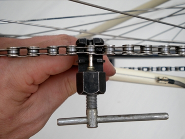
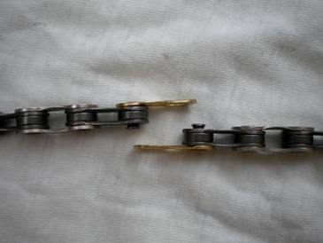
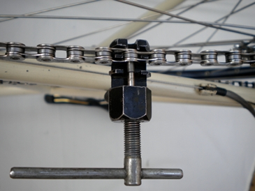

Summary
When to replace your chain
|
Replace a chain that has stretched: You need to
replace a chain, if you have cycled so far that the chain has stretched
beyond acceptable limits. A bike chain inevitably stretches with
use, so you need to replace it before the now-too-long links wear down
the teeth on your cassette and chainring, and you need to replace all
three components.
Measure chain stretch: It is impossible
to judge chain stretch with the naked eye - it just feels 'loose' or
'chewy' when you pedal. It is also impossible to say for how many
miles a chain will last - it depends how clean you keep it, and how
durable the chain. So use a 'Chain Wear Indicator' to measure the length
of your chain links.
Place one end of the shorter side of the indicator into
the chain. This shorter side might be marked '0.75% wear',
for example. If the other end of the indicator drops into the chain,
then the chain needs replacing soon (see figure). If the other end of the indicator stays proud of the chain, the chain is OK.
Place one end of the longer side of indicator into the
chain (perhaps marked 1% wear). If the other end drops into the
chain, then the chain needs replacing now.
|

Wear indicator drops into chain |
 Wear indicator proud of chain Wear indicator proud of chain |
|
|
Do I need to replace my chain, cassette and chainring?
|
Check your cassette and chainrings:
- does your chain 'kick off' or 'jump off' the chainring at the front,
or the cassette of gears at the rear, particularly when you push hard
on the pedals?
and
- are the teeth on your cassette and chainring are worn down into a
'zig-zag', or 'saw-tooth' profile, instead of the original 'half-moon'
shape?
|
If yes
|
unfortunately, you probably do need to replace all three components at the same time (see 'Replace cassette' page and 'Replace chainring' page). You did not replace your chain soon enough and are now being punished!
Check your chain: Before you buy expensive bits,
check your chain is running freely. Kinks in the chain, or
rust/severe lack of lubrication may also cause your chain to 'kick off'
(see 'Check chain runs freely' this page)
|
|
 Chains will 'kick off' a worn ring Chains will 'kick off' a worn ring |
|
|
Get chain onto small cogs: Change gear so that the
chain is on the smallest cog on the rear cassette and the smallest
chainring on the front. A slack chain is easier to work with. Note how
the chain is threaded through any mechanism for changing gear at both
the front and the back.
Split chain: Place the chain into the central
channel of a 'Chain Tool' or 'Chain Splitter'. Align the pin of the
chain tool with the rivet of a link of the chain. Turn the crank handle
of the tool so that the tool slowly pushes out the rivet. Then turn back
the handle, retract the tool pin, and the chain will be split.
If you will be putting the same chain back on, the trick is not to
push the rivet out too far - just enough to clear the barrel and for the
chain to fall apart, but the rivet is still stuck in the outer link
plate. If left like this, the rivet will be a lot easier to push back
in.
Keep the old chain: it's a good guide to the correct length of the new chain.
|
|

Push out rivet
|
 Rivet stuck in outer plate Rivet stuck in outer plate |
|
|
Thread one end of the new chain through the rear Derailleur mechanism
- over the front of the upper jockey wheel, through the hanger and then
round the back of the lower jockey wheel. Then thread the other end
through the front mechanism. Keep the chain slack by threading over the
smallest sprocket of the rear cassette and the smallest chainring.
|
 Thread chain through gears Thread chain through gears |
|
Buy kit?
Tools you need for this fix.
|
Ads. Selected by BikeFixer
|
|
|
Buy Chain Wear Indicator
Comprehensive range of quality products
Worldwide delivery
www.wiggle.co.uk/Chain Wear Indicator
|
 |
|
|
Buy Chain Tool
Comprehensive range of quality products
Worldwide delivery
www.wiggle.co.uk/Chain Tool
|
|
3. Check chain length and shorten
|
Check chain length:
- Check smallest run: Over the smallest
sprocket ('rear cog') and chainring, a chain of the right length
shouldn't hang down by more than 2cm or so when joined. If it 'slaps
around', you may need to remove a link or two.
- Check longest run: Over the
largest sprocket and chainring, a chain of the right length will look
reasonable horizontal, but will 'give' by 2-3cm when you push down on
it.
- Check most gears: In most gears, the rear Derailleur arm should hang close to the vertical.
Decide if you need to shorten your chain:
|
If yes
|
identify the link(s) to remove. Check that the chain ends you
will be left with are compatible e.g. if your new chain has a connector
link then you'll want two, closed ends. Then, use the chain tool as
before to push out the rivets. Take care not to shorten your chain
too much - is a lot easier to take links out, than add links in.
|
|
 Chain with very little 'give' Chain with very little 'give' |
|
|
|
4a. Join ends together with a connector link
|
Re-usable links or chain connectors come in two halves - put a
half-link on one end of the chain, and the other half-link on the other
end. Then join the two halves of the link together, and pull the chain
ends apart. Hear it click and it's joined!
|
|
Connector link
|

Press connector link together
|
|
|
4b. Join ends together with a rivet
|
Turn the chain tool round so that the chain tool pin is on the same
side as the rivet sticking out of the chain. Then place the two ends of
the chain in the tool, with the barrel end of the chain between the open
link plates of the other end of the chain. Align the pin head of the
tool with the rivet, the hole in the outer link plate and the hole
through the barrel. Mmm ... fiddly! Then screw in the pin to close the
chain. If the chain is not lubricated already, oil it now.
|
|

screw rivet back through barrel
|
|
|
|
5. Check chain moves freely
|
Test your new chain: Pedal gently, and attend to the chain closely.
- Can you hear any clicks or see any jumps as the chain passes through the Derailleur?
- Can you see any 'kinks' or 'humps' in the chain as its moves (see
figure)? The chain may even 'kick-off' the gears, particularly
under pressure.
|
If there are kinks in your chain
|
Identify which rivet is causing the problem, and then widen the link -
when inserting the rivet, you may have squeezed the plates together so
hard, that the chain no longer articulates freely.
Try inserting a screwdriver into the link and then rotating the
blade, forcing the link plates fractionally away from the barrel.
Or place your thumbs on the sticking link and attempt to bend the chain laterally (sideways, rather than up and down).
|
|
 stiff links cause chain to 'jump' stiff links cause chain to 'jump' |
 force plates of stiff links apart force plates of stiff links apart |
|
|
|
About BikeFixer
BikeFixer is a co-op of bikers and web designers.
| "mc" grew up car-free in the countryside, and had to ride a bike
from an early age – absolute magic! In later life, he survived London
traffic and l’Etape du Tour. |
|
Sources
The books below are tremendously helpful, but there is a lot of material to get through.
- Ballantine, R. and Grant, R. 1994, Richards Bicycle Repair Manual. Dorling Kindersley
- Downs, T. 2005, Bicycle Maintenance & Repair
- Haynes 2007, The Bike Book - Complete Cycle Maintenance
- Park 2008, BBB-2 Big Blue Book of Bike Repair, Park Tools
- Van der Plas, R., 2007, Bicycle Repair. Repair and Maintenance of the Modern Bicycle
Sponsorship
Top10bikefixes is going for gold with Velo Club de Trabail - “Chapeau” to past, present and future members.
If they knew how to fix their bikes, they would not keep the rest of the team waiting around!
|
|
Last Updated on Friday, 13 January 2012 12:00 |